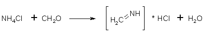
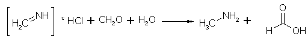
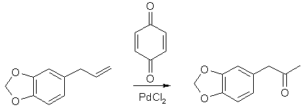
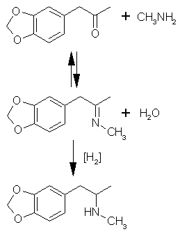

Introduction
Thanks to Strike, Rhodium, Ritter, Osmium, r2d3, Semtex Enigma, Spiceboy, ChemHack, Labrat, Eleusis, Ketone/LabGrrrl, and a personal hero, Dr. Shulgin.
And to the object that made this possible - the Internet.
Disclaimer: This is for theoretical argument only. IF someone chooses to follow this synthesis, note that the product has been 'Scheduled 1' by
the United States Government, and offenders can be prosecuted. In no way do I condone this activity.
This is a hypothetical synthesis for: 3,4-methylenedioxy-N-methylamphetamine. Or MDMA.HCl. Or Ecstacy. The synthesis as described 1. does not put
off nasty fumes, 2. doesn't require suspicious chemicals, and therefore is 3. perfect for the clandestine chemist. The synthesis itself can be performed in
a series of weekends or in a straight shot. If one were to follow this exactly - with no shortcuts - buying everything they're told - doing exactly
what is written - they and they're friends will have a lovely spring. For those who think they are better than the instructions as written - be prepared
to screw it up at least 4 times before success (or you finally figure out I'm right). Be prepared to invest ~$800. Be prepared to read and learn. It's
also a good idea when investing in chemicals to buy 5x what is needed for a synthesis - this way you can repeat it without buying it again.
Read the whole thing before you start. There is some prep-work that can be done ahead of time, or while you're distilling. Good luck.
Overview:
- Distillation: of Natural Oil to obtain pure Safrole
- Rxn: Formaldehyde + Ammonium Chloride -> MethylAmine.HCl (MeAm.HCl)
- Rxn: Safrole -(Wacker Oxidation(PdCl2+Benzoquinone))-> MDP2P
- Distillation: of Reaction contents to yield pure MDP2P
- Rxn: MDP2P -(Al/Hg Amalgam (MeAm.HCl) -> MDMA oil
- Crystallization: (MDMA oil + HCl in IPA/Xylene) (anhydrous conditions)
What you need:
This list is the basics. Do not even start this without ALL the Chemicals and Apparatus.
Apparatus and Glass:
- 'The Organic Chem Lab Survival
Manual' by James W. Zubrick. (A must, throughout this text, pages from this book will be mentioned. ~32$) (and very handy pictures of glass set-ups)
- Distillation Apparatus (1x500mL and 1x1000mL Round Bottom Flask, 1x250mL Round Bottom Flask, condenser, distillation adapter, vacuum adapter, thermometer adapter)
(Get Ground Glass Joints. These are the best. 19/22 or 24/40 - my first set was 19/22 - and is still used to this day.)
- Thermometer (0�C to ~300�C)
- Stand (Home Depot - (2x10in., flange, 2 ft. of �in pipe))
- Clamp (Buy it. Trust me its worth it) (for holding the glassware to the stand - these support several hundred dollars in glass - buy a nice one!)
- Hotplate/Stirrer combo (got to have it, its worth it) (www.labx.com - spend $200)
- Magnetic stir bar (look on the Web) (teflon coated)
- Water Aspirator (or a good vacuum source. But aspirators are cheap <$20)>
- Boiling Stones (for distillations. Small shards from a broken coffee mug)
- Tubing (about 10ft. total (3 meters) - hardware store - vacuum tubing is better than dialysis tubing - but both will work)
- Vaseline (not much - for coating of the ground glass joints)
- Measuring Cups (Prefably pyrex, and in milliliters (mL))
- 10 various sized glass containers/bottles (250mL, 500mL, 1L, 2L etc)
- Scale (a three beam analytical balance are great - and can be found for less than $100 - www.balances.com - they can weigh as much as a kilo and as little as 0.1g - perfect!)
- pH paper (chemical supply) (just one roll will do - ~10$) (nothing specific, just need to tell the difference between an acid and a basic solution)
Chemicals:
- Safrole (160g)(sassafras oil, yellow camphor oil) (Natural/Essential Oil distributor)
- Dimethylformamide (DMF) (350mL) (Diethylformamide or Formamide will work)
- p-Benzoquinone (Quinone, Benzoquinone) (120g) (Photo Shop, or Chem supply)
- Palladium Chloride (PdCl2) (2g) (Photo Shop, or chem supply)
- Methylene Chloride (DiChloroMethane, DCM) (this can be distilled from automotive solvents (just go into Nationwise, PepBoys, Sears, AutoZone And read the labels) Or a Liter can be bought from a Chem supplier.)(Zip-Strip furniture polish remover)
- Hg salt (1 gram of: HgCl2, Hg(NO3)2, Hg(OAc)2, HgCl, It can be anything, and 1g should last you a long time.)
- Isopropyl Alcohol (IPA, Pharmacies 91% Isopropyl Alcohol will be available)(get +3L)(don't get the 70% stuff) (or you can get pure stuff from a chem supplier)
- Epsom Salts (Magnesium Sulphate) (MgSO4) (grocery store/pharmacy) (Spread out on a cookie sheet, and bake in the oven at 200�C for 3hr to dry them - pretty useless if you don't dry it)
- Thick Al foil (heavy duty, or pie pans from the Grocery store)
- Muriatic Acid (31.45% HCl)(Pool pH down, Driveway cleaner, ~3$/gallon)
- Sodium Hydroxide (NaOH) (Drain Cleaner Crystals) (Read these labels, Get the stuff that is JUST NaOH.) (Red Devil Lye, Lye - Hardware Store)
- Ammonium Chloride (NH4Cl) (Photo Store or Chem Supplier)
- Paraformaldehyde (Hardware store) (called Mildewcyde or DiGas - made by the same people who brought you Damp-Rid - hint-hint)
- Peanut oil (this is a high boiling oil that we will use as an oil bath on the hotplate/stirring plate combo)
- Acetone (for cleaning your glass and crystal work-up) (Paint Section of Hardware Stores)
- Xylene (for crystallization) (paint section - thinner - get it specifically)

Step 1. (4 hours)
1. Distillation: of Natural Oil to obtain pure Safrole.
A Comprehensive Description of This Step by Chromic
Set up for a vacuum distillation like on page 53 of Zubrick. Always put a little Vaseline on the ground glass joints - this way they won't stick when
you try to take them apart. Put as much Natural oil (Sassy, Camphor, ect) as you have, but not more than 300mL, into the 500mL Round Bottom Flask (RBF)
with several Boiling Stones. Put one of your 250mL RB flasks as the receiving flask. Set up your Water Aspirator Vacuum, in the sink (this may require
setting this up a day before - parts, trips to the plumbing store, etc.) and attach the vacuum hose to the aspirator and then to the vacuum adapter on
the distillation set up. Start turning up the heat slowly! SLOWLY! The slower you do it, the better/purer your safrole will be. At normal pressure
safrole boils at 232�C - but under your vacuum, it may boil at anywhere from 110-160�C. Whatever temp it starts to come over at - make a note of it.
And if the temp is higher than 160�C - check your seals on the tubing and glassware - More than likely there is a little leak. Remember that Vaseline!
At the end of the distillation, you should have a water white oil that really refracts light - And has a lovely smell - a little like potpourri.
Distillation set-up: Set up the distillation set-up on your bed, before you try to put it together on the stand. You will get a good idea about how
the pieces go together, and become familiar with the fragility of the whole thing. Read Zubrick for advise about where to place the clamp.
The Peanut Oil: A bowl with a flat bottom rests on the Hotplate. It is filled with Peanut Oil. The distillation flask sits in the bowl but not touching
the bottom, so that the Hotplate heats the bowl, the bowl heats the Peanut Oil, the Peanut Oil heats the distillation flask. This is VERY effective.
And will be perfect for all your distillation needs - especially if you do it under vacuum.
Step 2. (2 hour work + 4 hours wait + 4 hours work)
2. Rxn: Formaldehyde + Ammonium Chloride -> MethylAmine.HCl


In your 500mL RBFlask: Set up for distillation (not vacuum). In the distillation flask (your 500mL RBFlask) put:
108g of NH4Cl, 120g Paraformaldehyde (molecular ratio 1:2, remember this when scaling up!) and 320ml of water and several boiling stones. Start
heating very SLOWLY. Remember to turn on the water in the condenser!
At 80�C a clear solution was obtained. Heating continued - The temperature was maintained for four hours at 104�C (this temp is VERY important - if
you over shoot it - don't worry - bring it back down and try to stabilize it at 104�C) Once you've got it at 104�C start the stop watch and do it for
4 hours. At 104�C, a small amount of distillate will come over - very slowly - this is good. We are removing methylal, and methylformate from the
reaction contents and therefore driving the reaction to the right - or getting more of what we want.
After four hours and while the solution is still hot, set up to vacuum distill (IE its already set-up - now just add the vacuum hose!) - but don't
turn on the vacuum yet. Turn up the heat. Within 30 minutes or so - liquid should start coming over - the internal temp of the mixture should not go
over 200�C - Keep distilling off the liquid until ½ of the solution remains - (IE distill off half of the solution.) Then, take your flask off the
Hotplate and let it sit in an ice/water bath. Crystals should start to form in several minutes. Filter off these Ammonium Chloride Crystals. Now set
up for distillation of the remaining liquid again - Add a couple more boiling stones. Distill off half of the remaining liquid. When half remains
(or a ¼ of the original solution), turn the vacuum on SLOWLY! VERY SLOWLY! - you don't want the whole mess of liquid jumping out at you. At some
point the whole mass will crystallize into a yellow-white solid. This is ~95% MethylAmine.HCl, ~2% Ammonium Chloride, and 3% DiMethylAmine.HCl. This
is fine for the next step. It may be a little wet, but if you let it crystallize hot (spontaneously in the flask with heat) it should be fairly dry.
Seal it in a wide mouth jar until needed.
As a way to check your product - if you live in a relatively humid area, you can put a crystal of your product on the table - walk away - and when
you come back a small puddle of water will be on the table where your product was. MethylAmine.HCl is said to be HYGROSCOPIC. Another way is to put
20mL of water in a cup then add 5g of the NaOH to it. Stir to dissolve. Now, drop several crystals of your product into it - it should smell like
rotting fish + ammonia. If you do the same with Ammonium Chloride, it will just smell like ammonia.
You'll recover about 1/3 of the ammonium chloride for recycling and after a lot of evaporating. You'll get ~80g of pure (95%) MethylAmine.HCl, which
corresponds to ~80% yield. Congrats. This can be stored at room temperature, forever. I've heard of people using 40+ year old MethylAmine.HCl with
excellent results.
Paraformaldehyde is the polymerized form of formaldehyde - but unlike most polymerization processes - this one is reversible - so Paraformaldehyde and
formaldehyde can be interchanged at will. If all you can get is formaldehyde solution - remember that if its 37% formaldehyde then 100g of the solution
contains 37g of formaldehyde - or just go ahead and change your amounts in the flask to - 324g of 37% Formaldehyde Solution, 108g NH4Cl, 205mL water.
Step 3. (2 hours work + 7 hours wait + 1 hour work)
3. Rxn: Safrole -(Wacker Oxidation (PdCl2+Benzoquinone))-> MDP2P

This step has been called the Wacker Oxidation. It uses PdCl2 as a catalyst to put and oxygen across a double bond. This step has been worked over
many times so do not change the amounts for the fabled 'scale-up'. If you do this correctly, you will have more MDMA.HCl than you know what to do with.
(Thanks Strike!)
Procedure:
Put the following into your CLEAN 1000mL RBFlask:
300mL of dimethylformamide (DMF), 50mL of tap water, 120g of p-Benzoquinone 2g of Palladium Chloride (PdCl2), Magnetic Stirbar. (PS - Don't skimp on the catalyst!)
Start the stir bar on 'slow stir'. Mix 160g of Safrole and 50mL DMF in a cup/jar. Drip the Safrole/DMF Mix into the solution at room temp (30°C) over
30min time. After the addition, the solution was dark reddish orange. Almost black. Make sure the stir bar is spinning - Now - Walk away. Go to bed.
Go somewhere else. Set your watch alarm to wake/remind you 7 hours later. Note: This reaction requires NO additional heating! Just stir!
Strikes comment: "After 4.5 h the solution will progress on its own to 45�C. Obvious exothermic reaction. After 7 h solution will be back to ~30�C."
The reaction mix was flooded with slightly acidic water (~50mL of Muriatic Acid (HCl) in 1.5L of water). The oil fell out of solution to the bottom.
It was black/blood red in color. This is when its nice to have a Big Sep Funnel.
Now we need to define several things. The upper layer (in this case!) Is the aqueous layer - IE it's the layer that contains the WATER - the bottom
layer is the organic layer (in this case!). IE it contains oil and other ORGANIC type molecules (IE the stuff you want!).
After you flood the reaction contents shake the container to mix the solution, give it about 10 minutes to settle - two layers will form. The upper
aqueous layer was a lighter blood red/pink. The upper aqueous layer was decanted from the oil (IE it was poured off). The aqueous Layer washed with
2x100mL DCM (Methylene Chloride / DiChloroMethane). If you can't see the layers, hold the container up to the light, so that the light shines through
the container. Keep the DCM washes - They contain the goods.
You now should have about 200mL total of DCM washes. You should also have about ~100mL of the 'Organic Layer' that you separated from the reaction
contents. Pour the DCM washes and the Organic layer together. Now wash the DCM/Organic layer with 2x150mL 10% NaOH (30g NaOH in 270mL water). This will
remove the other reaction by-product - hydroquinone. If you don't do this step the hydroquinone will clog your condenser when you try to distill. Keep
the DCM/Organic layer. The NaOH layer (Aqueous: is still on top) can be tossed. (Thanks Osmium!)
You can stop here and wait for another day - put the DCM/Organic Layer into the freezer.
Define Washes - 100mL of DCM was poured into the aqueous layer and then the aqueous layer+DCM was shaken so the two would mix - then it was put down to
let it settle out again. When it was settled (notice that the layer now is a different color) the aqueous layer was poured off again into another jar
where it was washed again with another 100mL portion of fresh DCM = 2x100mL washes.
Step 4. (4 hours work)
4. Distillation: of Reaction contents to yield pure MDP2P
Pour the DCM/Organic layer into your CLEAN 500mL RBFlask. Put several boiling stones in too. Set up for vacuum distillation.
This time we are going to collect a particular fraction in the flask - there is DCM (BP 40�C), water (BP 100�C), DMF (153�C), safrole (232�C),
ketone (BP est. ~290�C), and polymerized crap (BP ~300�C+)
Now remember when we distilled the safrole? What temp did it come over for you? Well - that temp plus approximately 25�C is the temp that the ketone
will come over under vacuum. For example, if your safrole comes over at 150�C, then the ketone will come over at 175�C. If your safrole comes over at
130�C then your ketone will come over at 155�C. Get it?
WEIGH the receiving flask! Write the weight on a piece of tape and tape it to the flask!
Start your vacuum distillation by first turning on your vacuum - if you remembered your boiling stones, then it will begin to boil immediately.
This is the DCM coming off first. The boiling may be very vigorous, So watch it, and be prepared to vary the pressure so it won't fly into your receiving
flask. Turn on the heat (Hotplate) SLOWLY! and let the temp climb to just over the temp at which safrole came over (SLOWLY: it should take at least 2
hours to reach that temperature - if you do it in under 2 hours you are going WAY to fast). You are going to have to change the flask, when the temp
gets to above the safrole temp. This is a bit tricky, because you are going to have to release the vacuum. Release the vacuum at the pump/aspirator and
change the flask quickly - you may just dump it out, rinse it once with acetone, or IPA (IsoPropylAlcohol) - and put it back. Start the vacuum immediately,
but be careful here, because the Organic layer that you are distilling might jump out of the flask and into the receiving flask - so if you can - vary the
vacuum so that the vacuum comes on GRADUALLY! (IE with an aspirator, turn on the water slowly.) The ketone oil is a clear white/yellow hint of green oil.
Re-weigh the flask for your yield calculation - you should have over 100g of ketone.
With an aspirator you can vary the vacuum when you are turning it on. You simply turn on the water slowly. IE Increase water pressure slowly. By turning
it off, you can make water jump into the receiving flask because there is a 'vacuum' in the distillation apparatus and it will suck water out of the
aspirator - SO - when you turn off the vacuum, do so by removing the hose from the aspirator - while the aspirator is going. You can also vary the vacuum
by removing the hose PARTIALLY - This will take some practice so play and have fun.
Strike's excellent post read: "With high vacuum at 100-140�C ~18g safrole came over. At 166�C came over ~125g ketone." When she did this method...
Keep the ketone. Smell it. Look at it. Look at how it refracts light. For the brave: taste it. Note all of these 'properties' and remember - After you
have judged its properties, put it in the freezer. Note: it won't freeze. It will become a very viscous liquid.
If you try to distill the ketone at atmospheric pressure (no vacuum), you will get to about 220�C and then the whole flask will polymerize. Total
waste of effort, time, and precursors. So don't mess around and get a vacuum source.
The ketone is unstable. It won't explode or anything, but if left to its own devises, it will rearrange. And then it will be useless. At room temp,
it will rearrange in about a week - depending on where you live - if you keep it in the freezer - it can last months - FREEZER! After its in the freezer
you can stop for today.
Step 5.
5. Rxn: MDP2P -(Al/Hg Amalgam (MeAm.HCl) -> MDMA oil

(Thanks Ritter, Osmium, Shulgin!)
This is called the Al/Hg Amalgam. This process utilizes the electronegative properties of the Aluminum. Now, something that most people don't realize,
is that all aluminum is actually coated with Al2O3. This is the oxidized form of Aluminum. We will remove this part of the foil so that the aluminum can
reduce the imine with elemental Al.
This reaction actually has two parts. First, there is the ketone → imine condensation. This reaction reacts the ketone with methyl-amine to form an
imine - water is produced as a product. Second, the imine is reduced (Hydrogen is added across the double bond) to the amine. The condensation really
needs anhydrous (no water) conditions, and the reduction actually needs water - so there is a fine balance here - IE don't mess with the procedure.
What you need to have prepared ahead of time:
- CLEAN 500mL RBFlask.
- 20g of thick aluminum foil cut into ~1cm squares.
- 0.1g of Hg(salt) (any mercury salt will do, not Hg Metal)
(Note: Hg=Mercury)
- Disposal Jug (milk jug)
- 1L of Clean water
- 25mL of 25% NaOH solution (dissolve 25g NaOH in 75g of water, then 25mL of it)
- 50g of MethylAmine.HCl dissolved in 300mL of 91% Isopropyl Alcohol
- 40g of 'ketone' dissolved in 50mL of 91% Isopropyl Alcohol
- Cool water bath. (A milk jug with the top cut off)
- Ice (don't screw around, buy a bag) (or have at least several kilo's handy)
Set up your stand and clamp so that, when the flask is clamped to the stand the bottom of the flask is about 4 inches (10cm) from the table top. This
is so that you can put the heating plate and stirbar combo under it. Have your thermometer already in its thermometer adapter so you can throw it in the
flask at any second.
Prepare the following, put them in a jar and have them ready at a moments notice:
- 50g MethylAmine.HCl dissolved in 300mL 91% Isopropyl Alcohol
- 40g 'ketone' in 50mL of 91% Isopropyl Alcohol
It is very important that these are ready before you start! Before you start!
20g of Al squares are put into the 500mL RBFlask. They are covered with ~350mL of H2O (water). 0.1g of Hg(salt) (or just a very small spatula) is
placed in with the Al squares, and given a good stir. Amalgamation was allowed to proceed until there was the evolution of fine bubbles the formation
of a light grey precipitate, and the appearance of occasional silvery spots on the surface of the aluminum. (Thanks Dr. Shulgin!)
Basically here the Al2O3 is being destroyed, the water is reacting with the Al2O3 to form
Al(OH)3 and H2. This should take between 15 and 30 minutes. Just be patient.
When amalgamation is complete, pour out the water into the milk jug. Pour in another ~350mL of water and carefully shake the flask to stir up the contents.
Pour it out into the jug. Do it again with another ~350mL of water. So basically, you wash the Al pieces with 2x350mL of water. Dump out as much of the
water as you can in 10 seconds or so - then immediately go to the next step - leave the Al foil in.
This will remove most of the Hg from the solution. Don't worry, the Hg will be completely removed in the successive washes during the work up. If you
let the Al squares sit in between washes, they will heat up and re-form the Al2O3 in a matter of seconds. So be quick and have the
ingredients ready for the procedure.
Now, immediately, add in THIS order:
- 50g MethylAmine.HCl dissolved in 300mL 91% Isopropyl Alcohol
- 40g 'ketone' in 50mL of 91% Isopropyl Alcohol, then drop in a Magnetic Stirbar. Try to get the stirbar going - it might take several minutes.
Now drip this in 25mL of 25% NaOH solution over several minutes. Put the thermometer in the solution. Start being very paranoid about the temperature.
The temperature of the reaction flask must not climb above 60�C. Its best if the temp is kept around 50�C. Stirring is necessary so, with the heat off, stirbar
on, flask sitting in the cool water bath. When the temp gets to about 50�C, put several chunks of ice in the bath. If the temp falls below 40�C, take some
of the ice out. But whatever you do, make sure the temp remains below 60�C. The whole time you are doing this the contents are a grey sludge. Remember to
keep the stirbar going! If the stirbar is difficult to start going. Don't worry, trying to get it started seems to work just enough.
At some point you'll notice that the temperature is not rising like it had been (in about 4 hours or so). You have reached the end of the ketone ->
imine condensation - Look inside the reaction flask and see if you still see any pieces of Al foil - if you do - continue stirring until the Al foil has
been depleted. This reaction should go no less than 6 hours.
Now, after you are convinced that the reaction has stopped (6 hours later) - IE the temp of the solution is room temperature, and there is no more
foil chips in the mix. Pour in 25mL of the 25% NaOH solution. Stir the contents some more, and then let the stirbar stop and then let the solution rest
for at least 30 minutes. The NaOH solution will make that grey sludge into a filterable consistency. If you can't tell there has been a change in the
consistency - put in another 25mL of 25% NaOH solution. The grey sludge should abruptly change from a uniform grey to a chunky white/grey blob. Then in
a matter of minutes the whole thing will be resting on the bottom of your flask.
The reaction contents will settle out. The grey sludge will settle to the bottom, and a clear yellow liquid will rise to the top. Pour off the clear
yellow liquid. Save it. Put 200mL of 91% Isopropyl Alcohol into the reaction contents, stir the solution, so that the whole thing is disturbed and
swirling in the flask and again wait. Pour off the 2nd clear yellow liquid once it settles. Add the 2nd clear yellow liquid to the first. Do this several
times, or until the clear liquid is no longer yellow.
This is an extraction out of the reaction contents. The more you do this process, the higher your yield. So don't do it once and get excited and try to
complete it with just the first extraction because you will just waste half of your product. You've gone this far - don't fuck it up now.
After you have gotten as much of the yellow liquid out as you could. Put the grey sludge in the same milk jug waste container. Dispose of it properly -
the milk jug contains elemental Hg - Not a lot - less than 0.1g. But you should dispose of it properly. Not down the sink. Take it to a High School or A
University, To the Chemistry department - tell them you broke a thermometer, and then couldn't figure out what to clean it up with.
Set up for vacuum distillation (Boiling Stones!) but we're not going to distill. We are going to evaporate the Isopropyl Alcohol (IPA) from the
reaction contents. Under an aspirator vacuum, the IPA should come over around 35�C. Make sure you get the alcohol out. When the alcohol is close to being
gone - the solution might spontaneously separate in your distillation flask. Not to worry - the top layer is probably your product, and the bottom is
water. Don't try to separate it, just dump the whole thing into the next procedure.
The next two paragraphs out line a procedure known as an Acid/Base extraction. This works very well for our target molecule, and any molecule that contains
an amino group. If the next two paragraphs are not done, then plan on not having any crystals when you're done.
After the alcohol has all gone, Take the brown oil that is left and put it into 500mL of ~0.5M HCl solution (470mL water + 30mL of Muriatic Acid).
Stir or shake it up. A lot of the brown oil should go into the acid solution. Now pour into this solution 30mL of DCM. Shake again and let it settle.
You will notice two layers formed - The top layer is the Aqueous layer - which contains your product, and the bottom layer contains the DCM, polymerized
crap, and non Nitrogen containing molecules. Pour off the top layer (That contains your product) and discard the DCM layer. Wash the Aqueous layer again
with 30mL of DCM, and repeat the process. Note that the aqueous layer contains the product - Do not discard the aqueous layer! You can discard the DCM
washes, because they contain nothing useful what-so-ever. Discard!
Now, slowly add 50mL of 25% NaOH solution to the aqueous layer. When you do this the Aqueous layer will turn a milky white and may heat up just a
little bit. Not to worry. A light brown oil will fall out of the solution. This is your product (in the freebase form). Before collecting it, wash the
'now basic' Aqueous layer with ~50mL of DCM. Shake and let it settle out. Pour off the top Aqueous layer, and keep the DCM this time! The DCM washes
contain the goods! Wash the aqueous layer twice more with 50mL of DCM. Combine those DCM washes that contain your product, and continue.
Set up for vacuum distillation, and once again, just boil off the DCM (Boiling Stones!). There might be a little water in it, so this time when you
are boiling off the DCM, let the temp of the distillation flask reach ~50�C for several minutes. That should be good enough. You should have a light
brown oil in the flask - it kind of looks like thick Newcastle Beer.
Step 6 (2 hours work)
6. Crystallization (MDMA oil + HCl in IPA/Xylene)
This must be done in anhydrous conditions. If its not, then you will not get crystals. Anhydrous means 'no-water'. If water is present, then you can
expect to get crapola.
Procedure:
This first step can be done ahead of time. Like, during a distillation or reaction: Get a fresh bottle of 91% Isopropyl Alcohol, and pour out
approximately 100mL. Now get some of your DRY Magnesium Sulphate (Epsom Salts) (about 100mL worth) and dump it into the 91% IPA. There might be a
little heat evolution, but not to worry .... Shake it up and then let it sit till the MgSO4 settles out. Pour off the IPA, and then put more fresh
MgSO4 into it (about 100mL worth). Now shake the bottle and let it sit for 15 minutes. You must do this at least three times - It really is much
better to do it four times - Why fuck it up now right? After three times you will have 'Dry' IPA. You can actually do this while you are distilling
or waiting for a reaction to proceed.
Make a mixture of 100mL 'Dry' IPA and 150mL Xylene. Pour it into the flask that contains the MDMA oil, and drop the stirbar in too. Stir so that the
whole thing is mixed up real well - Now drip in Muriatic Acid slowly. Test with pH paper every 5 drops or so - keep adding the Muriatic Acid until
the pH of the solution is 5-6 - or just barely acidic.
Set up for vacuum distillation, and distill the solution, distill this with the stirbar in instead of the boiling stones - IE When the solution has
reached a pH of 5-6 - Start distilling. Be careful not to let the solution get above 120�C - When a lot of the solution has boiled away, crystals
will spring to life in the flask. Under vacuum, the solution should never get above 70�C.
Filter these with a coffee filter, suspended over a jar - This gets the excess IPA/Xylene out. Scrape the crystals on to a plate and let the crystals
dry, by letting the IPA/Xylene (mostly Xylene at this point) evaporate - this might take several hours - a 60 Watt lamp 6 inches (20cm) away from the
crystals shining brightly helps. Stir the crystals to promote even heating.
The crystals will be a brown-yellow color. Now scrape the crystals into a jar, and pour ~20mL of acetone onto them. Swirl the mixture. The crystals
won't dissolve - but a lot of the brown will. The brown-acetone is poured off, and the acetone wash is repeated.
After the acetone wash, dry the crystals. You should have around 15g of dry crystals. That's 150 hits. The now 'almost white' crystals have
melting point values over the range from 145-153 � C, depending on how much water was in there during crystallization. And these crystals are
ready for consumption. 60mg is not enough. 80mg is great for my wife. 100mg is a great dose. 125mg is balls-to-the-wall. 150mg is too much.
For me at least. Fun for me is actually 80mg MDMA+70mg MDA in one pill. WHOH. But I guess you'll have to do another synth - right?
If you have completed this, congrats. Fucking Fantastic. Now Teach Someone Else! If you do - we WIN! Dig it?